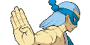

5° Generacion
La quinta generación o generación V de Pokémon se refiere a la actualización de la lista de Pokémon, dando un total de 649 Pokémon revelados. Esta generación transcurre en los videojuegos Pokémon Negro y Blanco, Pokémon Negro y Blanco 2, Pokémon Rumble Blast!, PokéPark 2: Un mundo de ilusiones y Pokémon Conquest, de los cuales son pertenecientes a la actualizada lista de Pokémon. Los nuevos Pokémon son pertenecientes a la nueva región Teselia, región que cuenta con modernas ciudades y en la que se pueden apreciar las cuatro estaciones. También en esta generación fueron introducidos nuevos movimientos, habilidades y el Pokémon Global Link.
El 9 de abril 2010 fueron revelados por la página oficial japonesa de Pokémon dos nuevos juegos que se llamarían Pokémon Negro y Blanco que salieron para Nintendo DS y no para la nueva Nintendo 3DS como se creía en un principio. Fue asombro de todos en el público al ver que el juego tenia efectos 3D a simple vista dentro de la pantalla 2D de la DS, solo que no aprovecharía características especiales de la Nintendo 3DS. Posteriormente salieron a la venta otros videojuegos secundarios que incluían Pokémon introducidos en esta generación: Super Pokémon Rumble, PokéPark 2: Un mundo de ilusiones y Pokémon Conquest.

|


|
Pokémon iniciales
El 9 de mayo 2010, Pokémon Sunday dio a conocer las siluetas de los 3 nuevos Pokémon iniciales que serían como siempre uno de tipo Fuego otro de tipo Planta y otro de tipo Agua. El 12 de mayo 2010 se anunció que los nuevos Pokémon iniciales serian llamados: Snivy de tipo planta, Tepig de tipo fuego y el de tipo agua Oshawott.
En Pokémon Negro, Blanco, Negro 2 y Blanco 2 se da la opción de elegir entre Oshawott, Snivy y Tepig.
| Snivy |
Tepig |
Oshawott |
 |
 |
 |
| Planta |
Fuego |
Agua |
Pokémon legendarios
Los legendarios que protagonizaran las carátulas. Reshiram es el blanco Tipo dragón y Tipo fuego, protagonista legendario de Pokémon Negro y Zekrom el negro y de Tipo dragón y Eléctrico, protagonista legendario de Pokémon Blanco. El día 25 de Julio se dio a conocer a Victini el Pokémon Victoria, tipo Fuego y Psíquico. El tercer Pokémon legendario de esta generación; ocupará el lugar número 000 en la Pokédex de Teselia y que se podrá conseguir mediante el Ticket Libertad, entregado mediante un evento Pokémon, en esta generación se introdujeron un total de 13 Pokémon legendarios.
| Victini |
Cobalion |
Terrakion |
Virizion |
Tornadus |
 |
 |
 |
 |
 |
| Psiquico / Fuego |
Acero / Lucha |
Roca / Lucha |
Planta / Lucha |
Volador |
| Thundurus |
Reshiram |
Zekrom |
Landorus |
Kyurem |
 |
 |
 |
 |
 |
| Electrico / Volador |
Dragon / Fuego |
Dragon / Electrico |
Tierra / Volador |
Dragon / Hielo |
| Keldeo |
Meloetta |
Genesect |
 |
 |
 |
| Agua / Lucha |
Normal / Psiquico |
Bicho / Acero |
Líderes de gimnasio
Hay 8 líderes de gimnasio, que son aquellos que están especializados en cierto elemento de Pokémon y son los más fuertes de su ciudad:
Lider |
Tipo |
Lugar |
Medalla |
Millo

Maíz
Zeo |
Planta Agua Fuego |
Ciudad Gres |

Medalla Trío |

Aloe |
Normal |
Ciudad Esmalte |

Medalla Base |
Camus |
Bicho |
Ciudad Porcelana |

Medalla Elitro |
Camila |
Electrico |
Ciudad Fayenza |

Medalla Voltio |
Yakón |
Tierra |
Ciudad Loza |

Medalla Temblor |
Gerania |
Volador |
Ciudad Teja |

Medalla Jet |
Junco |
Hielo |
Ciudad Caolín |

Medalla Candelizo |
Iris

Lirio |
Dragon |
Ciudad Verde |

Medalla Leyenda |
Alto Mando
Son los 4 mejores entrenadores de la región más el campeón, que en este caso es tu rival.
1° Miembro |
2° Miembro |
3° Miembro |
4° Miembro |
Campion |
Campion |
Anis |
Aza |
Lotto |
Catleya |
Mirto |
.png)
Iris |
Fantasma |
Siniestro |
Fucha |
Psiquico |
Varios |
Dragon |
Curiosidaes
- Es la generacion que ha introducido mas líderes de gimnasio, con un total de 14.
- Es la primera generación de videojuegos en la que tienes dos rivales. (Cheren y Bel)
- Es la primera generación en la que hay un Pokémon con #000 en la Pokédex regional, Victini.
- Hay un gimnasio con tres líderes. Lucharás contra el líder que tenga ventaja contra tu Pokémon inicial (solo en Pokémon Blanco y Negro).
- Es la generación que más Pokémon ha introducido, 156 en total.
- Es la generación que presenta más Pokémon de evolución tardía, ya que la mayoría sobrepasa el nivel 30 para obtener su primera evolución, sin contar a los Pokémon iniciales.
- Es la única generación, en la que ninguno de los nuevos Pokémon mostrados es la preevolución o la evolución de alguno que ya existía anteriormente.
- Es la generación en la que siempre va a haber más porcentaje de machos que de hembras, sin contar casos como el de Lilligant que siempre ha de ser hembra.
- Es la primera generación que cuenta con un Pokémon legendario de tipo bicho, en este caso, Genesect.
- Es la primera generación en la que el Profesor que te entrega tu Pokémon inicial es un personaje femenino; siendo esta la Profesora Encina.
- A partir de esta generación los Pokémon cerrarán los ojos (si tienen ojos visibles) cuando estén dormidos.
- La gran mayoría de los líderes de gimnasio de esta generación tienen nombres de plantas y flores.
- Es la primera generación en que sus dos entregas principales (Negro y Blanco) no cuentan con un relanzamiento en una tercera versión (con extras y más elementos en la trama), en su lugar se lanzaron un par de secuelas basadas en la misma región años después y con nuevos protagonistas (Negro 2 y Blanco 2).